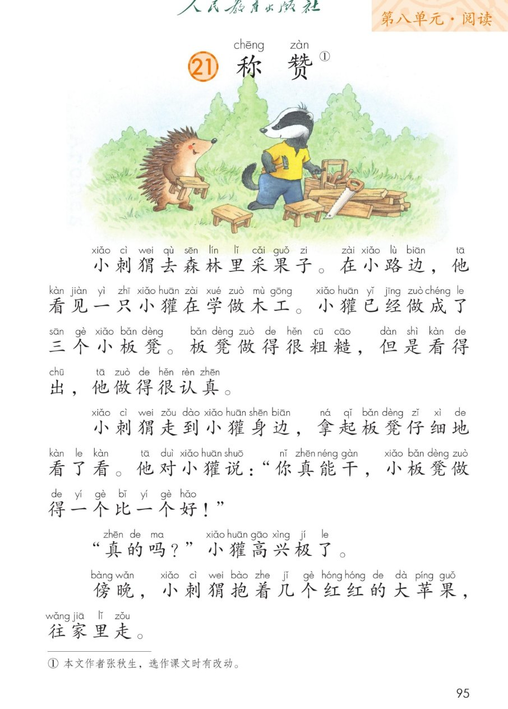
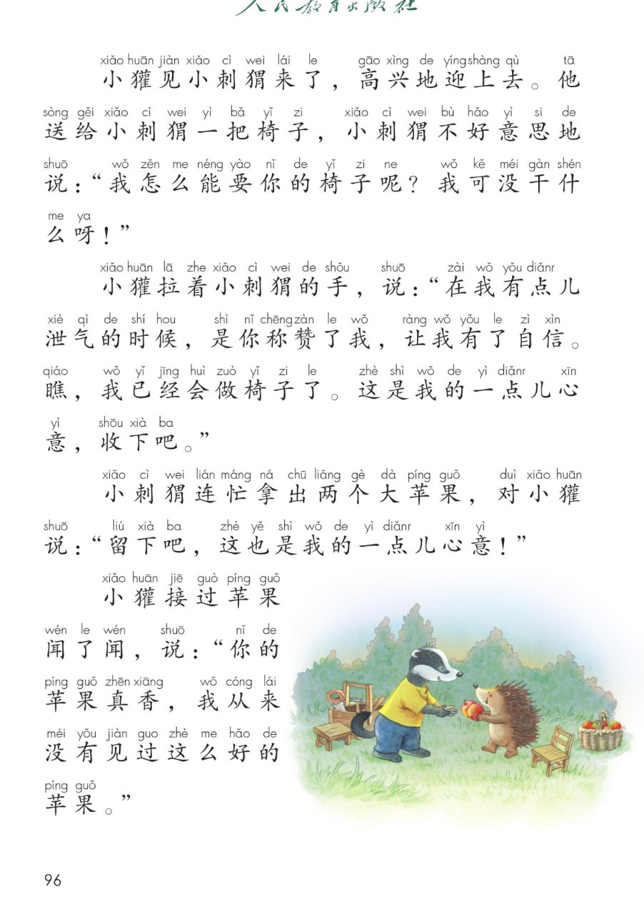
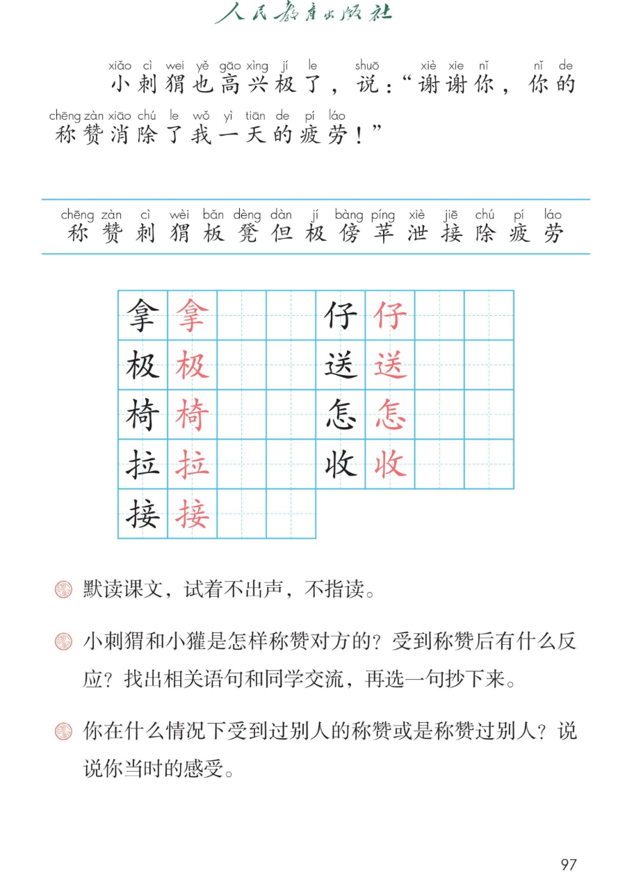

🦔 第 21 课《称赞》· 有声图文带读
统编版语文 · 第八单元·阅读 · 课本 第 95~97 页 · 作者：张秋生
课文 9 个自然段
会认字 15
会写字 9
听写词 10
近义词 4 组
深入理解 8 题
本课本领 分角色朗读
🎧 五步学（可随时点任意一句、一个字、一个词单独听）： ① 听读课文 ——一句一句读，读到哪一句哪一句发光；开「跟读」后读完一句留时间让你自己读。② 学字词 ——15 个会认字、9 个会写字（含书写提示），点一个读一个。③ 词语·听写·造句 ——听写 10 个词（读两遍→你写→报答案→听示范句），再听 4 组近义词辨析。④ 深入理解 ——8 道题（认知 / 理解 / 运用 / 拓展），开放题答案不唯一，先想后看。⑤ 讲故事·分角色 ——按顺序说称赞的故事，再分角色朗读课文。
点段前的 ①②③ 听整段
🔁 跟读模式：关
👁 隐藏注音（自测用）
注音只标本课要认、要写的字，读音来自课本第 97 页生字表
🎤 朗读要求（老师标准） 不添字、不漏字、不回读 ；句号停得长一点 ；问句（“真的吗？”“我怎么能要你的椅子呢？”）句末往上扬 ；响亮、真诚 ，“一个比一个好”一句比一句高；高兴、感激 ，“真的吗？”要又惊又喜；慢一点、重一点 ，读出感动。
① 小刺cì 猬wei 去森林里采果子。 在小路边，他看见一只小獾在学做木工。 小獾已经做成了三个小板bǎn 凳dèng 。 板凳做得很粗糙，但dàn 是看得出，他做得很认真。
② 小刺cì 猬wei 走到小獾身边，拿ná 起板bǎn 凳dèng 仔zǐ 细地看了看。 他对小獾说：“你真能干，小板凳做得一个比一个好！”
③ “真的吗？” 小獾高兴极jí 了。
④ 傍bàng 晚，小刺cì 猬wei 抱着几个红红的大苹píng 果，往家里走。
⑤ 小獾见小刺cì 猬wei 来了，高兴地迎上去。 他送sòng 给小刺猬一把椅yǐ 子，小刺猬不好意思地说：“我怎zěn 么能要你的椅子呢？我可没干什么呀！”
⑥ 小獾拉lā 着小刺猬的手，说：“在我有点儿泄xiè 气的时候，是你称chēng 赞zàn 了我，让我有了自信。瞧，我已经会做椅子了。这是我的一点儿心意，收shōu 下吧。”
⑦ 小刺猬连忙拿ná 出两个大苹果，对小獾说：“留下吧，这也是我的一点儿心意！”
⑧ 小獾接jiē 过苹果闻了闻，说：“你的苹果真香，我从来没有见过这么好的苹果。”
⑨ 小刺猬也高兴极jí 了，说：“谢谢你，你的称chēng 赞zàn 消除chú 了我一天的疲pí 劳láo ！”
🤔 想一想（点我可跳过）
点一张图，听读整页

第 95 页 · 课题与课文前四段

第 96 页 · 小獾送椅子

第 97 页 · 生字表与课后题
📖 人教版《语文》二年级上册 · 课本第 95~97 页 · 图片仅供个人学习，版权归人民教育出版社所有
点一个字，听读音、词语和课文里的句子
结构、部首、笔画与书写提示为通用规范，供参考，以教材和老师的指导为准
拿
ná
拿起 · 拿来
10 画 · 上下（手）
上扁下长，手的撇横要舒展
极
jí
极了 · 北极
7 画 · 左右（木）
左窄右宽，及的捺要舒展
椅
yǐ
椅子 · 桌椅
12 画 · 左右（木）
左窄右宽，奇要写得稳
拉
lā
拉着 · 拉手
8 画 · 左右（扌）
左窄右宽，立的横要长
接
jiē
接过 · 接住
11 画 · 左右（扌）
左窄右宽，女的横要长
仔
zǐ
仔细 · 仔仔细细
5 画 · 左右（亻）
左窄右宽，子横变提
送
sòng
送给 · 送客
9 画 · 半包围（辶）
先写关，走之捺要长
怎
zěn
怎么 · 怎样
9 画 · 上下（心）
上窄下扁，三点要分开
收
shōu
收下 · 收好
6 画 · 左右（攵）
左窄右宽，反文捺舒展
这四个词，读懂了课文就懂了
粗糙 板凳做得很粗糙，但是看得出，他做得很认真。粗糙就是说做得不光滑、不细致，摸上去毛毛的。
泄气 在我有点儿泄气的时候，是你称赞了我。泄气就是失去信心，觉得做不好、不想做了。
自信 让我有了自信。自信就是相信自己能做好。
疲劳 你的称赞消除了我一天的疲劳。疲劳就是很累、很疲倦。
读两遍 → 你在纸上写 → 报答案 → 听示范句
准备听写 · 共 10 个词
○ ○ ○
点下面的「开始听写」，听到一个词就写一个词。
▶ 开始听写
🔁 再读一遍
👁 看答案
点词听读，点句子听示范句，再自己说一句
1 称赞 课文词语
示范句：小刺猬称赞小獾，小板凳做得一个比一个好。
✏️ 我也能说：谁 + 称赞 + 谁
2 拿起 会写字
示范句：小刺猬拿起板凳仔细地看了看。
✏️ 我也能说：谁 + 拿起 + 什么
3 极了 会写字
示范句：小獾高兴极了。
✏️ 我也能说：什么 + 高兴极了
4 椅子 会写字
示范句：小獾送给小刺猬一把椅子。
✏️ 我也能说：一把 + 椅子
5 拉着 会写字
示范句：小獾拉着小刺猬的手。
✏️ 我也能说：谁 + 拉着 + 谁的手
6 接过 会写字
示范句：小獾接过苹果闻了闻。
✏️ 我也能说：谁 + 接过 + 什么
7 仔细 会写字
示范句：小刺猬拿起板凳仔细地看了看。
✏️ 我也能说：仔细地 + 做什么
8 送给 会写字
示范句：他送给小刺猬一把椅子。
✏️ 我也能说：谁 + 送给 + 谁 + 什么
9 怎么 会写字
示范句：我怎么能要你的椅子呢？
✏️ 我也能说：怎么 + 能 + 做什么
10 收下 会写字
示范句：这是我的一点儿心意，收下吧。
✏️ 我也能说：收下 + 什么
相同点 / 不一样在哪 / 各造一句
称赞 — 表扬
相同：都是说别人好 ，让别人高兴。
不一样：称赞 是真心觉得好，话说得更郑重；表扬 多是老师、长辈对小朋友说。
称赞：小刺猬称赞小獾，小板凳做得一个比一个好。
仔细 — 认真
相同：都是不马虎 ，很用心。
不一样：仔细 多指看得细、做得细，一个地方也不放过；认真 多指态度好，做事不随便。
仔细：小刺猬拿起板凳仔细地看了看。
连忙 — 赶快
相同：都是动作快、不耽误 。
不一样：连忙 是马上就去做什么，多写对别人的反应；赶快 是催着快一点。
连忙：小刺猬连忙拿出两个大苹果。
疲劳 — 疲倦
相同：都是很累、没力气 。
不一样：疲劳 多指身体累，常跟一天、旅途连用；疲倦 还能说想睡觉、没精神。
疲劳：你的称赞消除了我一天的疲劳。
一个比一个好（一…比…一…，越比越好） 一个比一个好 一天比一天冷 一次比一次快
有点儿…（程度不重） 有点儿泄气 有点儿累 有点儿冷
一点儿…（数量很少） 一点儿心意 一点儿水 一点儿时间
…极了（程度很深） 高兴极了 累极了 美极了
标「答案不唯一」的题，说得有道理都对
认知 小刺猬在森林里看见了谁？他正在做什么？看解析
🤔 想一想
解析：
课文第一自然段说：他看见一只小獾在学做木工。
小獾做的木工活是小板凳 ，已经做成了三个。
小獾不是在做别的，是在学 做木工，说明他刚开始学。
💡 找答案先问两个人：谁 看见了谁 ，那个人在做什么
认知 小獾做成了几个小板凳？板凳做得怎么样？看解析
🤔 想一想
解析：
课文说：小獾已经做成了三个小板凳。
板凳做得很粗糙 ，就是不光滑、不细致。
可是看得出他做得很认真 ——样子不好看，态度很好。
💡 这一题有两个信息：几个 、做得怎么样 ，一个也别漏
理解 板凳做得很粗糙，小刺猬为什么还要称赞小獾“一个比一个好”？看解析
🤔 想一想
解析：
小刺猬先拿起板凳仔细地看了看 ，不是随口就夸。
“一个比一个好”，说明他看到了进步 ：第二个比第一个好，第三个又更好。
称赞的话要说得真 ：夸进步、夸认真，比只说“真好看”更有用。
💡 想一想：小刺猬夸的是板凳的样，还是小獾的认真和进步
理解 小獾说“是你称赞了我，让我有了自信”，称赞为什么能让小獾学会做椅子？看解析
🤔 想一想
解析：
泄气的时候，人就不想做了；有了自信 ，才愿意接着做。
称赞像给心里加了一把劲：我做得好，我还要做得更好 。
所以小獾从做板凳 到会做椅子 ，进步了。
💡 把“泄气”和“自信”连起来想：心情变了，事情就变了
理解 小刺猬先是不肯要椅子，后来又说“这也是我的一点儿心意”，这是为什么？看解析
🤔 想一想
解析：
不肯要，是客气 ：我怎么能要你的椅子呢？我可没干什么呀！
回赠苹果，是礼貌 ：你送我椅子，我也送你苹果。
两个人说的都是“一点儿心意”——心意 不大，情意很重。
💡 一个“心意”出现两次，想想这两个心意有什么不一样
运用 找出课文中称赞对方的语句，学着称赞一次。可以说同学，也可以说家里人。（句式：你真……，……得一个比一个……）看解析
🤔 想一想
解析：
先说他哪里好 ：字、跑步、画画、帮妈妈做事……
再用上课文的句式：你真能干，……一个比一个…… 。
还可以加一句：我也要向你学 。
🌈 答案不唯一，说得具体、说得真诚就很好
运用 用“瞧，我已经会……了”说一说自己最近学会的一件事。看解析
🤔 想一想
解析：
说学会了什么 ：系鞋带、跳绳、洗碗、背古诗……
说怎么学会的 ：练了好几天，妈妈教我的。
说心里的感觉 ：我很高兴，我也有自信了。
🌈 答案不唯一，说清“学会了什么、心里怎样”就很完整
拓展 你在什么情况下受到过别人的称赞，或是称赞过别人？说说你当时的感受。（课后题第三题）看解析
🤔 想一想
解析：
说一件事：什么时候、因为什么 被称赞，或者称赞了谁。
说心里的感觉：高兴、有劲、想做得更好 。
再说一句道理：称赞能让人有自信 ，也能让两个人更亲。
🌈 答案不唯一，说清“什么事、什么感受”就很好
点一张卡，听这一步
💬 讲故事支架：先 说小刺猬看见什么（小獾在学做木工）→ 再 说他为什么称赞（仔细看，一个比一个好）→ 接着 说小獾怎么回报（送一把椅子）→ 然后 说小刺猬怎么回赠（两个大苹果）→ 最后 说两个人的心里话（有了自信、消除了疲劳）。
点一张卡，听这一部分怎么读
📖 旁白·森林里
“小刺猬去森林里采果子。”
💬 要读得慢一点、清楚 ，像讲故事的开头；粗糙和认真要读出对比
📖 旁白·看板凳
“小刺猬走到小獾身边，拿起板凳仔细地看了看。”
💬 仔细地看了看要读得慢 ，好像在跟着小刺猬一起看
🦔 小刺猬·称赞
“他对小獾说：你真能干，小板凳做得一个比一个好！”
💬 要读得响亮、真诚 ，“一个比一个好”一句比一句高
🔨 小獾·惊喜
“真的吗？”
💬 “真的吗？”要又惊又喜 ，句末往上扬；“高兴极了”读出跳起来的样子
📖 旁白·傍晚
“傍晚，小刺猬抱着几个红红的大苹果，往家里走。”
💬 傍晚要读得慢 ，迎上去要读得快 ，一慢一快见心情
🦔 小刺猬·不好意思
“他送给小刺猬一把椅子，小刺猬不好意思地说：我怎么能要你的椅子呢？我可没干什么呀！”
💬 “不好意思”要读得轻、慢 ，问句往上扬，读出客气
🔨 小獾·心里话
“小獾拉着小刺猬的手，说：在我有点儿泄气的时候，是你称赞了我，让我有了自信。瞧，我已经会做椅子了。这是我的一点儿心意，收下吧。”
💬 泄气要读得低 ，有了自信要读得亮 ，收下吧要读得真诚
🦔 小刺猬·回赠
“小刺猬连忙拿出两个大苹果，对小獾说：留下吧，这也是我的一点儿心意！”
💬 连忙要读得快 ，“一点儿心意”要读得认真
🔨 小獾·夸苹果
“小獾接过苹果闻了闻，说：你的苹果真香，我从来没有见过这么好的苹果。”
💬 闻了闻要读得慢 ，“真香”要读得香 ，“从来没见过”读出惊喜
🦔 小刺猬·道谢
“小刺猬也高兴极了，说：谢谢你，你的称赞消除了我一天的疲劳！”
💬 要读得慢一点、重一点 ，读出心里的感动